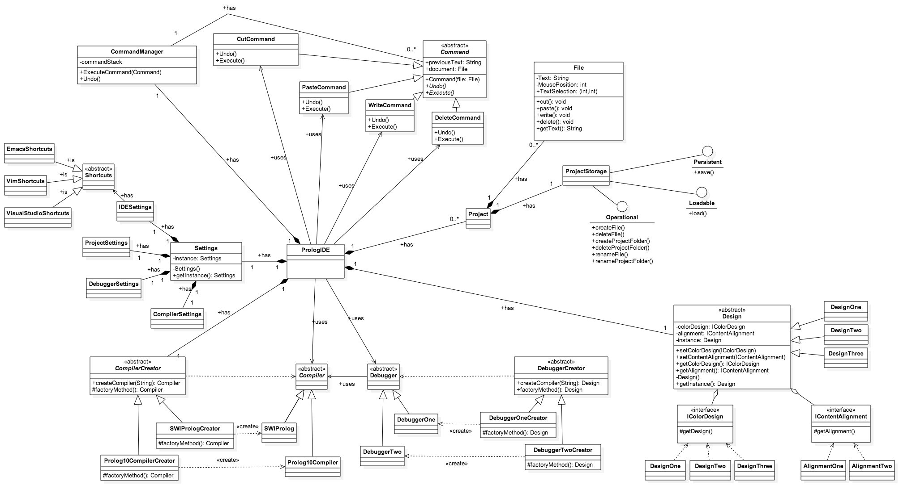

PrologIDE
The brand new IDE for professional Prolog development.
Vision
In moderner Softwareentwicklung ist der umfangreiche Einsatz von Tools längst Standard. Tools helfen dem Entwickler zu mehr Produktivität, mehr Qualität und entlasten ihn von langweiligen und eintönigen Aufgaben. Der Kern einer jeden Tool-Strategie für ihr Unternehmen ist dabei die IDE. Sie ist das zentrale Tool um Software zu entwickeln und übernimmt die fundamentalsten Aufgaben.
Doch in Prolog ist eine zeitgemäße IDE nicht verfügbar gewesen. Bis zur Geburt dieses Projekts das Prolog ins 21. Jahrhundert befördert und einen produktiven und professionellen Umgang mit der Sprache erlaubt.
Anforderungen
Anforderungen an das Projekt:
-
Plattform-Agnostik
Prolog ist eine Sprache die sich nicht auf eine bestimmte Plattform festlegt, sondern auf jedem Betriebssystem brilliert. Deshalb soll auch die IDE auf den drei populärsten Plattformen - Windows, Linux und Mac - laufen.
-
Text Highlighting
Direkt bei der Eingabe sollen Code Wörter der Prolog Sprache hervorgehoben werden und Strukturen übersichtlicher dargestellt werden. Damit können Entwickler schnell Syntaxfehler und Inhalt des Codes erfassen.
-
Code Analyse
Syntax und Semantik des Programmes soll fortlaufend untersucht werden und Fehlermeldungen frühzeitig und übersichtlich an den User zurück gegeben werden.
-
Compilierung
Die IDE soll eine schnelle und simple Compilier-Methode anbieten. Der User soll über einen Button die komplette Compilierung starten und ablaufen lassen. Die IDE soll dabei die Projektabhängigkeiten verwalten und auflösen.
-
Debuggingunterstützung
Eine gute Unterstützung der Prolog-Debuggers soll fester Bestandteil der IDE sein. Dabei soll der User übersichtlich durch den Quellcode navigiert werden und ihm durch anzeigen von aktuellen Werten in der Suche nach Fehlern unterstützen.
-
Projektmanagement
Mit der IDE soll ein großer Teil der Projektorganisation übernommen werden und der Entwickler somit von dieser Tätigkeit entlastet werden. Vor dem User soll die Komplexität und die Abhängigkeiten des Projekts versteckt werden und transparent gespeichert werden.
-
Einfache Integration von Versionierungssystemen
Die IDE soll unterschiedliche Versionierungssysteme, wie zum Beispiel Git und Subversion, einbinden und mit übernehmen. Projekte sollen direkt aus Repositories geladen und rückgespeichert werden können.
Anforderungsanalyse
Die oben formulierten Anforderungen wurden während des Projekt analysiert und ein System aufgebaut in dem die Abhängigkeiten der einzelnen Punkte in klarem Zusammenhang steht. Daraus ergibt sich das folgende UseCase Diagramm:
Dieser grobe Überblick über die definierten UseCases kann beliebig verfeinert werden. Besonders die Ausformulierung der UseCases kann dabei unterschiedlich umfangreich sein. Zwei der wichtigsten UseCases sind hier präsentiert.
Der UseCase für die Compilierung des Projektes ist einer der wichtigsten UseCases, da er eine Grundfunktionalität einschliesst und auch in dem sehr wichtigen Debugging UseCase Anwendung findet:
| Use Case Nr | 2 | ||
| Use Case Name | Compile Project | ||
| Created By | Maximilian Probst | Last Updated By | Maximilian Probst |
| Date created | 03.03.2015 | Last Updated | 03.03.2015 |
| Actor | User | ||
| Description | The project gets compiled into an executable program. | ||
| Preconditions | Application is started, Project is loaded | ||
| Postconditions | |||
| Priority | High | ||
| Frequency of Use | Often | ||
| Normal Course of Events | Files are saved, compiler settings are parsed, compilation is invoked, the new binary is executed | ||
| Alternative Events | |||
| Exceptions | No correct input -> Return errors generated by the compiler | ||
| Includes | Read Compiler Options, Run application | ||
| Special Requirements | |||
| Assumptions | Correct Code | ||
| Notes and Issues | |||
Der zweite UseCase beschreibt das Laden eines Projekts.
| Use Case Nr | 5 | ||
| Use Case Name | Project Loading | ||
| Created By | Maximilian Probst | Last Updated By | Maximilian Probst |
| Date created | 03.03.2015 | Last Updated | 03.03.2015 |
| Actor | User | ||
| Description | A project is loaded in the workspace of the PrologIDE | ||
| Preconditions | Application is started, Project files are in the correct format | ||
| Postconditions | Project is loaded and all possibilities to work on the project are enabled | ||
| Priority | High | ||
| Frequency of Use | Sometimes | ||
| Normal Course of Events | |||
| Alternative Events | |||
| Exceptions | Incorrect file format of the project file. Corrupted files. | ||
| Includes | |||
| Special Requirements | |||
| Assumptions | |||
| Notes and Issues | The concrete implementation could take the project from a server. | ||
Projektplanung - Ziele und Vorgehensweisen
Nach der ausführlichen Analyse der Anforderungen, Wünschen und bestehenden Lösungen wurde ein Projektplan eingeführt. Dabei wurde eine inkrementelle Projektvorgehensmethode gewählt. Das heißt stückweise sollen immer neue Parts der Application eingeführt werden und somit durch jedes Inkrement eine Erweiterung der bestehenden Applikation vorgenommen werden. Dabei soll die Balance gehalten werden zwischen der schnellen Belieferung des Kunden und der größtmöglichen Qualität der Software. Als Zeitraum zwischen den Releases sollen circa 2 Wochen liegen.
Aus diesen Überlegungen wurden die Anforderungen in Packets gebündelt und die folgenden Milestones definiert:
| 17.03.2015 | Erste Kundenpräsentation: Vorstellung einer IDE die die Kompilierung und Text Highlighting unterstützt |
| 31.03.2015 | Zweite Kundenpräsentation und Alpha-Auslieferung: Vorstellung des Debugginginterfaces und der Code Analyse in einer Live-Demo |
| 14.04.2015 | Release der Beta-Version |
| 21.04.2015 | Finales Release |
Daraus ergibt sich ein konkreter Zeitplan der in dem untenstehenden Bild gut nachvollzogen werden kann.

Architektur
Folgende Anforderungen werden an die Architektur der Prolog-IDE gestellt:
- Entwicklung muss offline stattfinden können
- Echtzeit Compilierung des Codes
- Austausch mit anderen Entwicklern über Versionierungssysteme
Außerdem gibt es folgende Randbedingungen:
- Datenaustausch in Versionierungssystemen erfolgt mit Prolog-Code
- Stark schwankende Anzahl von aktiven Benutzern
Eine serverseitige Umsetzung der Businesslogik scheidet aus, um die Offline-Entwicklung von Prolog-Code zu ermöglichen. Auch ohne diese Anforderung wäre aufgrund der stark schwankenden Benutzeranzahl und der hohen Rechenlast durch die Live-Compilierung eine Businesslogik auf Serverseite unwirtschaftlich. Mit anderen Systemen wird ausschließlich Prolog-Code ausgetauscht. Aus diesem Grund ist das Zusammenarbeiten mit verschiedensten IDE-Versionen möglich. Es ist sinnvoll, ein Versionierungstool zu verwenden, das Abwärtskompatibilität ermöglicht. Der Nachteil der Updateproblematik bei der Fat Client Architektur tritt bei uns deshalb nicht auf.
Technischer Aufbau der Applikation
Bei der technischen Umsetzung der Applikation wurde versucht die Anforderungsanalyse konsequent weiterzuführen und zu verfeinern. Dies ist besonders gut im UML-Klassendiagramm zu erkennen.
Besonders gut sind in diesem Fall auch die grundlegenden Abstraktionspatterns zu sehen. Ein klassisches Beispiel für die Anwendung von OOP-Methoden ist an dem Beispiel der abstrakten Klasse "Shortcuts" zu sehen. Sie wird von zahlreichen Klassen implementiert die Methoden von ihr erben. Um das UML-Diagramm sauber zu halten wurde hierbei auf die Auflistung der Methoden verzichtet. Es ist aber deutlich zu sehen das im Falle einer Tastenkombination in der Appliktion die konkrete Klasse aufgerufen werden kann, die dann evaluiert welche Aktionen ausgeführt werden sollen. Damit ist sicher gestellt das jeder Programmierer seine Vorlieben in der IDE ausleben kann.
Bei der Programmierung wird dabei auf die Sprache C++ gesetzt die sehr gut für unterschiedliche Plattformen geschrieben werden kann. Um die GUI zu modelieren wird auf das Qt-Framework gesetzt, dass graphische Komponenten plattformunabhängig bereitstellt. Durch die Wahl dieser Kombination konnte weitesgehend derselbe Code für alle Plattformen verwendet werden.
Fazit
Die Application wurde streng nach Projektplan entwickelt und von den Entwicklern in der vorgesehen Zeit fertiggestellt. Alle Milestones konnten gehalten werden und nach einigen Nachbesserungen wurde das Projekt endgültig ausgeliefert.
Die umfangreichen Anforderungen konnten alle beachtet werden und sind ohne Einschränkungen auf allen Plattformen benutzbar. Die untenstehenden Screenshots vermitteln dabei einen ersten Eindruck über die Mächtigkeit der neuen Programmierumgebung.
Besonders die Konzentration auf Einfachheit und Funktionalität wird dabei offensichtlich, die dem Prolog Developer helfen sollen sich auf seine Arbeit zu fokusieren. Durch die Kategorisierung die schon im ersten Funktionalen Entwurf vorgenommen wurde, werden die diversen Feature übersichtlich getrennt und präsentiert.
Projekt Team Lambda - Die Entwickler hinter der IDE
Team Lambda ist die Produktionsstätte der PrologIDE. Die kleine Firma arbeitet auf neustem Stand der Methoden und führt inkrementelle Projekte durch, die Entwickler in ihrer alltäglichen Arbeit unterstützen und zur Produktivität beitragen.
Nicolai Davidsson
Projektleiter und Software Developer

Maximilian Probst
Dokumentation und Marketing
Moritz Scherzinger
Software Developer
Benedikt Jung
Software Developer
Lukas Wuesteney
Testing